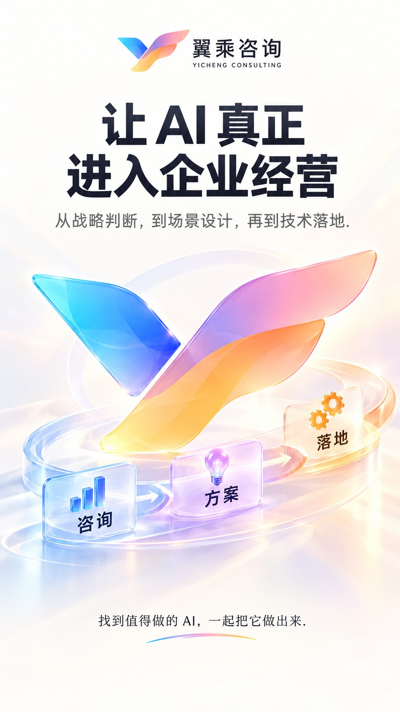
让 AI 真正进入企业经营
从战略判断，到场景设计，再到技术落地。找到值得做的 AI，一起把它做出来。
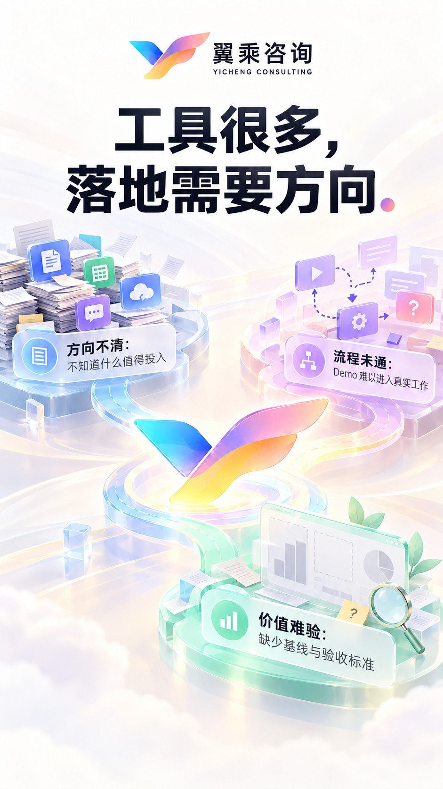
工具很多，落地需要方向
方向不清：不知道什么值得投入 流程未通：Demo 难以进入真实工作 价值难验：缺少基线与验收标准
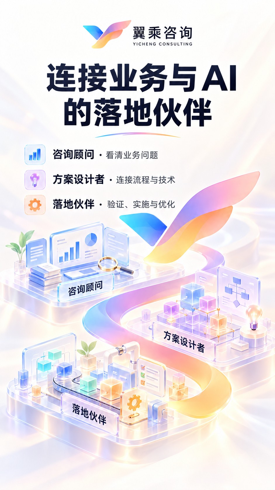
连接业务与 AI 的落地伙伴
咨询顾问 · 看清业务问题 方案设计者 · 连接流程与技术 落地伙伴 · 验证、实施与优化
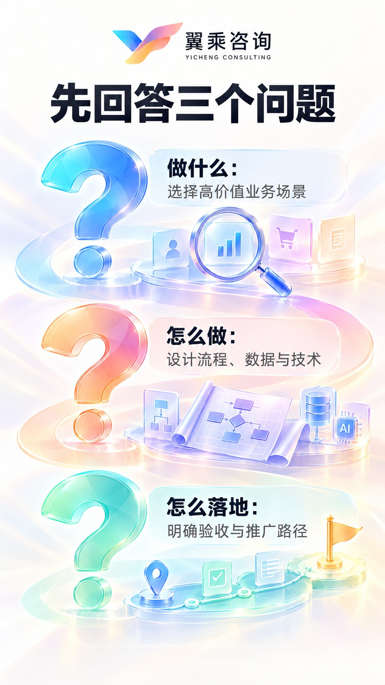
先回答三个问题
做什么：选择高价值业务场景 怎么做：设计流程、数据与技术 怎么落地：明确验收与推广路径
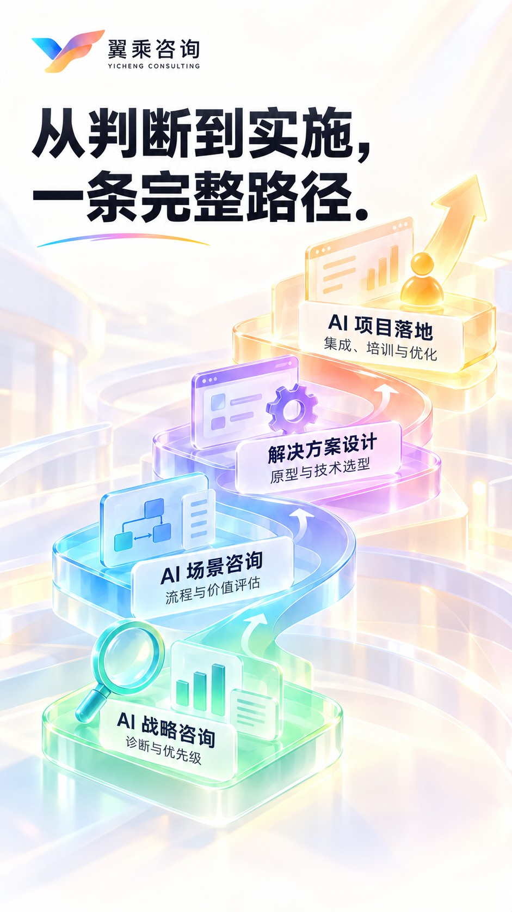
从判断到实施，一条完整路径
AI 战略咨询：诊断与优先级 AI 场景咨询：流程与价值评估 解决方案设计：原型与技术选型 AI 项目落地：集成、培训与优化
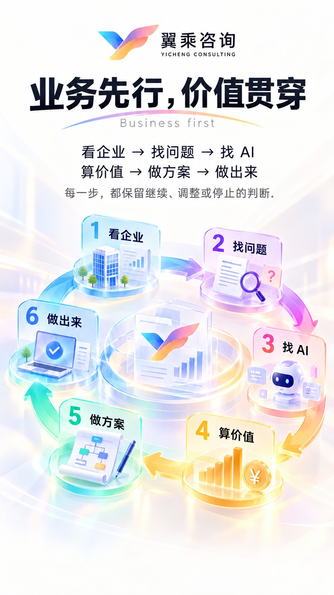
业务先行，价值贯穿
看企业 → 找问题 → 找 AI 算价值 → 做方案 → 做出来 每一步，都保留继续、调整或停止的判断
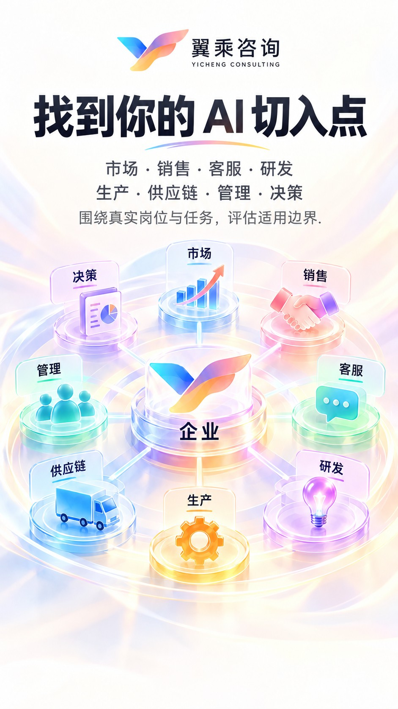
找到你的 AI 切入点
市场 · 销售 · 客服 · 研发 生产 · 供应链 · 管理 · 决策 围绕真实岗位与任务，评估适用边界
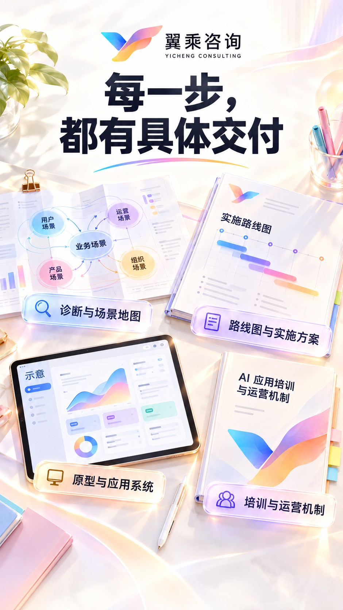
每一步，都有具体交付
诊断与场景地图 路线图与实施方案 原型与应用系统 培训与运营机制
让能力落在具体工作里
知识智能：带来源的知识检索 流程与业务智能：询盘整理、报价草拟 决策智能：指标汇总、异常分析 场景示例，非客户案例
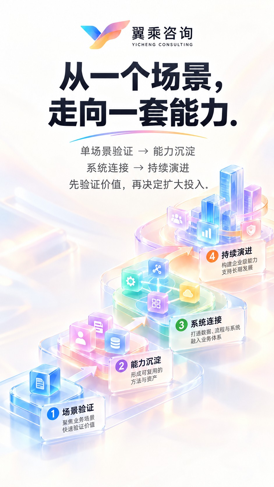
从一个场景，走向一套能力
单场景验证 → 能力沉淀 系统连接 → 持续演进 先验证价值，再决定扩大投入
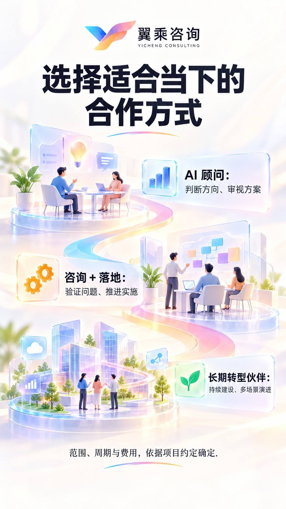
选择适合当下的合作方式
AI 顾问：判断方向、审视方案 咨询＋落地：验证问题、推进实施 长期转型伙伴：持续建设、多场景演进 范围、周期与费用，依据项目约定确定
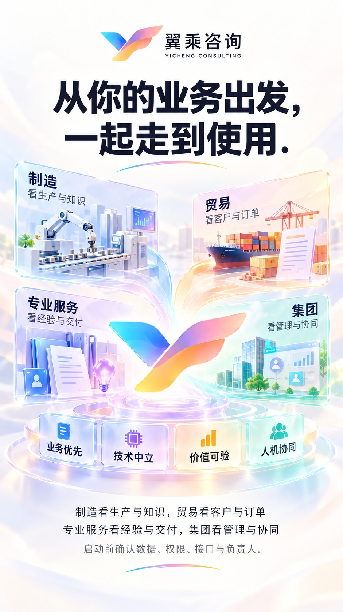
从你的业务出发，一起走到使用
业务优先 · 技术中立 · 价值可验 · 人机协同 制造看生产与知识，贸易看客户与订单 专业服务看经验与交付，集团看管理与协同 启动前确认数据、权限、接口与负责人
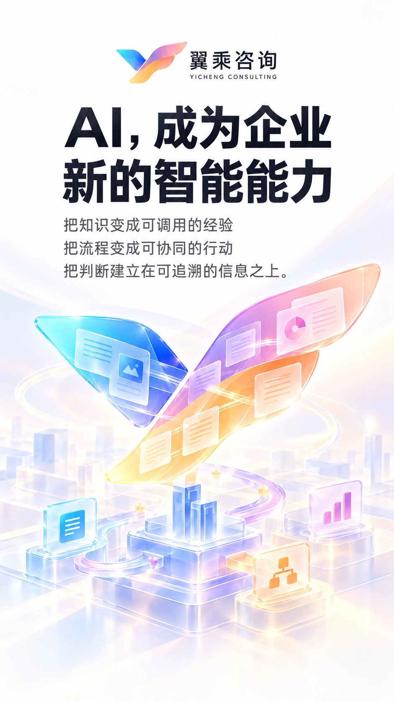
AI，成为企业新的智能能力
把知识变成可调用的经验 把流程变成可协同的行动 把判断建立在可追溯的信息之上
从一个真实问题，开始聊起
你最想改善的业务环节是什么？ 一起判断 AI 是否适合，以及如何开始 翼乘咨询 · 咨询 / 方案 / 落地
客服入口配置中